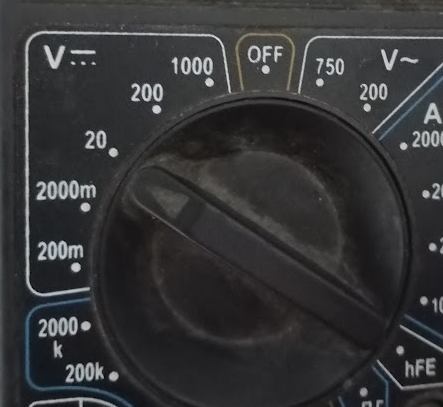
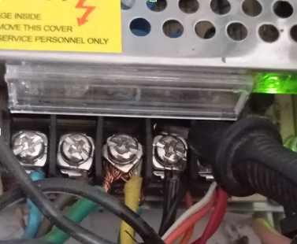
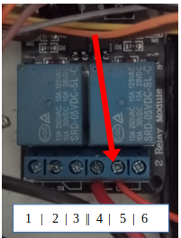
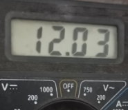
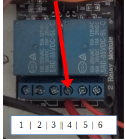
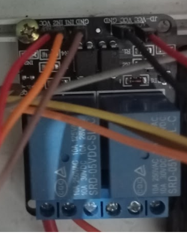

Problema: baja humedad
a) No se escucha el sonido de la bomba
Si la bomba no enciende es un problema eléctrico o mecánico.
Verificar que la fuente este encendida y entregando 12V. Utilice un multímetro: 1. coloque el multimetro en posición 20 v continua

2. coloque la punta negra en el cuarto terminal de la fuente donde salen cables negros.
3. Coloque la punta roja en el terminal del medio (5) de la caja azul que tiene cables.
4. El multímetro deberá indicar 12 v de lo contrario existe un problema de cableado o la fuente no funciona.
5. Verificar que en el plazo de 5 minutos el rele se active encendiendo una de las luces rojas.
6. Cada vez que se activa el rele verificar que el pin de la izquierda se pone en 12 V. Coloque la punta roja sobre el borne que esta a la izquieda del borne del medio (4) y deje la punta negra en la posición indicada en el punto dos. Verificar que esta en 0V hasta que se prende la luz y mientras la luz esta encendida la tensión es 12 V.En caso de que 6 no se cumpla: apagar la incubadora. Quitar el cable del terminal 4 y colocarlo en el 1, quitar el cable de 5 y colocarlo en 2. Quite el cable de in1 y colóquelo en in2 la siguiente figura muestra como queda el cableado final.

b) La bomba se enciende (cada dos minutos) pero no sale agua
Esto indica un problema en el recorrido del agua. Verificar que tenga agua el reservorio, que la manguera no este obstruida o ahorcada y que el pico no este tapado.